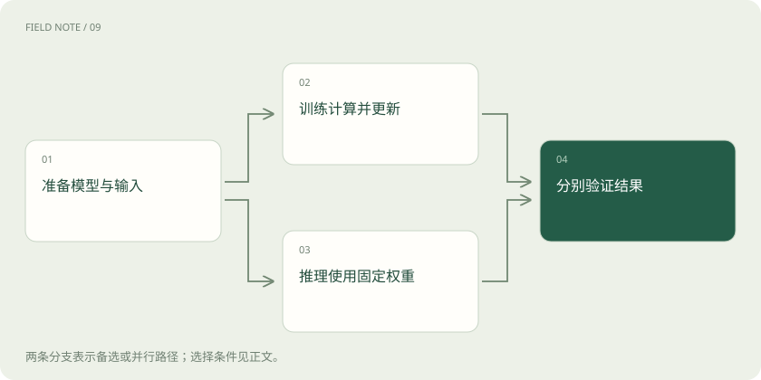

先读哪些知识
先用一个类比理解
类比只帮助建立直觉，不等同于技术的完整机制。
一图看懂
神经网络接收的是数值表示
神经网络把输入转换为数值张量，再通过参数化运算产生输出。表格中的价格、日期和商品类型要经过相应编码，图片可以表示为像素或特征块，语言可以表示为 Token 的向量。输入表示决定模型能利用什么信息，但编码成数字并不意味着不同数字之间天然存在合理的远近关系。
本站沿需求估计作教学例子：商品类别编号只是在区分名称，不能因为编号八大于编号二，就假定前者需求更高。类别可以使用合适的编码或可学习表示，连续数量则要检查单位、尺度和缺失值。这个准备过程属于模型输入设计，不是网络自己能够无条件补救的杂乱信息。
一层如何把输入变为新表示
最简单的一层对输入进行加权组合并加入偏置，权重决定当前组合怎样响应各项输入。多层网络可以把前面得到的中间表示继续组合，但层数不是理解能力的直接刻度。网络的连接方式、参数规模、训练目标与数据都会影响结果，不能只凭“很深”判断适合什么任务。
例如第一层可能把价格与促销信息组合成对购买倾向有帮助的表示，后一层再结合天气和商品类型产生需求估计。这只是帮助建立直觉的解释，不表示每个神经元都有可人工命名的业务含义。实际表示经常分布在许多维度中，不能看到一个权重就编造完整因果故事。
非线性为什么重要
如果多层之间只有线性变换，连续叠加仍可折合为一个线性变换，增加层数不会自动得到复杂的分段关系。激活函数引入非线性，使网络能表达不同区域中的不同响应。不过表达能力只是能否表示某种关系，不保证训练算法一定找到它，也不保证该关系能泛化。
生鲜需求可能在小幅降价时变化不大，而超过某个促销强度后出现明显增长。非线性网络能够表达这类变化，但要有足够覆盖相关区域的数据。若历史上从未出现大幅降价，模型对那一区域的输出仍可能不可靠，不能把函数能画出曲线等同于已经观察到业务规律。
图解：计算梯度与更新参数分开
前向计算得到预测，损失定义方向
前向计算是把输入按网络运算得到预测；损失函数把预测与训练目标的差异转成可优化的数值。数值预测可使用适合任务的误差函数，分类则常用与类别概率相关的目标。损失的选择会改变模型优先修正什么错误，因此它不是仅用于展示的分数。
若需求估计只惩罚平均偏差，模型可能倾向于忽略稀少但高代价的缺货情形。训练目标与最终业务代价可以相关，却未必相同。应分别记录训练损失、未见数据指标和业务结果；损失下降只是学习过程的一项观察，不能单独证明部署后报损或缺货一定减少。
反向传播计算的是局部变化关系
反向传播利用链式法则，从损失沿计算图反向计算参数的梯度。梯度告诉我们：在当前参数和当前数据附近，微小改变某个参数会怎样影响损失。它不是给每个神经元分配业务责任，也不是把正确答案直接写进权重。自动微分框架根据实际执行的可微运算组织计算。
PyTorch 的 autograd 可以记录需要求导的运算并计算相关梯度；优化器随后才依据梯度改变参数。把这两步分开很重要：调用求导不等于已经更新模型。梯度还可能受到数值精度、运算结构和梯度截断等处理影响，出现异常时应检查计算与数据，而非把它描述为模型没有认真思考。
优化器和学习率决定怎样迈步
梯度给出局部方向，优化器决定如何结合当前和历史信息更新参数。学习率控制步幅：过大可能越过有用区域并导致不稳定，过小则可能进展缓慢。实际常用的小批量梯度带有样本噪声，所以训练曲线不必每一步下降，也不能根据一两个抖动点断言训练失败。
batch 是一次送入模型处理的样本批次；通常每批更新一次，也可以累积多批梯度后再更新。epoch 通常表示遍历一次训练数据。它们与更新步数相关，却不是同一个数量。增大批次可能改变内存、吞吐和优化行为，不能只看每秒处理样本数。比较训练设置时要同时说明总数据量、更新次数与验证效果，否则资源差异会混入方法比较。
训练和推理改变的东西不同
训练通常包含求梯度和参数更新，推理主要使用已经得到的参数计算输出。推理输入、随机采样、上下文或外部记忆可以改变输出，而不改变模型权重。某些系统会在运行后另行更新模型或策略，需要明确指出那条训练链路，不能把每次聊天都默认描述成模型正在学习用户。
运行配置也有不同职责：例如部分层在训练和评估时行为不同，设置评估模式与关闭梯度记录又是两个操作，前者调整相关层行为，后者控制自动微分记录。普通读者无需记 API，但应知道“进入评估模式”不等于重新训练，也不等于所有随机性或所有显存开销都消失。
图解：训练与推理的两条路径

学到规律还需要独立验证
网络可能记住样本、利用泄漏字段或适应标签中的偏差。参数更新顺利、训练损失下降与真实任务效果是三个不同层面的结论。评估要用未参与拟合与调参的数据，还应保留简单模型或规则作为参考。网络更复杂时，对数据、资源与可解释性的要求往往也增加。
教学例子最后应回到备货决策：按真实时间获得输入，比较预测数量和业务代价，检查新商品、促销日与普通日。若神经网络仅在训练材料上优秀，而未来回放无法稳定超过规则，应保留规则并分析原因。理解神经网络的意义是知道怎样提出和验证假设，而不是默认所有问题都应使用它。
放在一起对比
| 环节 | 直接承担什么 | 不能据此判断 |
|---|---|---|
| 前向计算 | 从输入计算预测 | 参数已经学习新知识 |
| 损失函数 | 定义当前优化差异 | 业务收益必然增加 |
| 反向传播 | 计算参数的局部梯度 | 参数已经更新或因果解释成立 |
| 优化器更新 | 按规则改变参数 | 未见任务表现必然提高 |
| 独立评估 | 检查未见条件表现 | 覆盖所有未来分布 |
放进真实场景
教学例子：网络估计某商品需求后产生误差，反向传播计算各参数梯度，优化器进行一次更新；之后必须在未见日期重新预测，才能检查这次训练方向是否有实际帮助。
别踩这个误区
想一想
推理时改变提示词导致答案变化，是否说明模型权重已经更新？
不能。输入与上下文变化足以改变输出；只有明确执行了参数更新过程，才能讨论权重变化及其效果。
关联阅读
资料与边界
本文为原创知识讲解。类比和图示经过简化；示例数字不代表实测或报价。整理日期：2026-11-05。文末列出对应技术的原始资料，具体功能与版本支持请以原文为准。